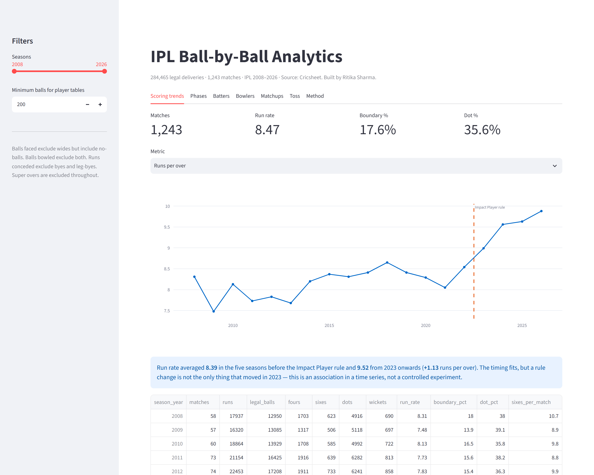
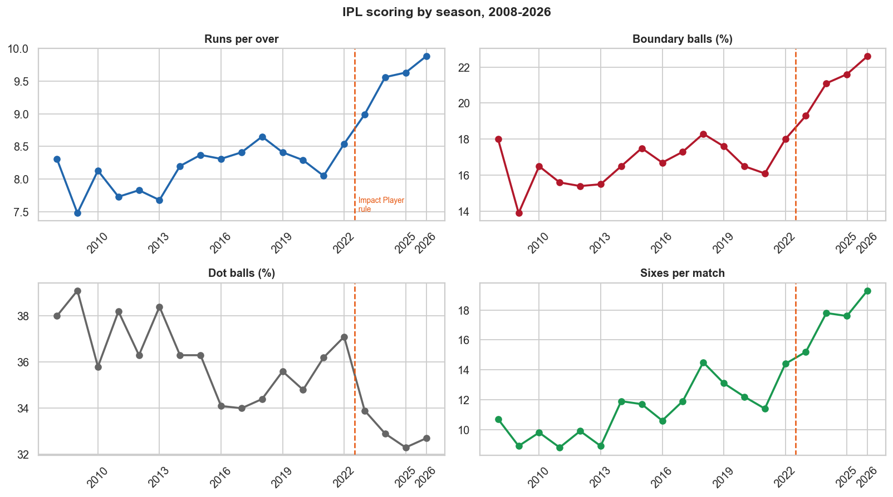
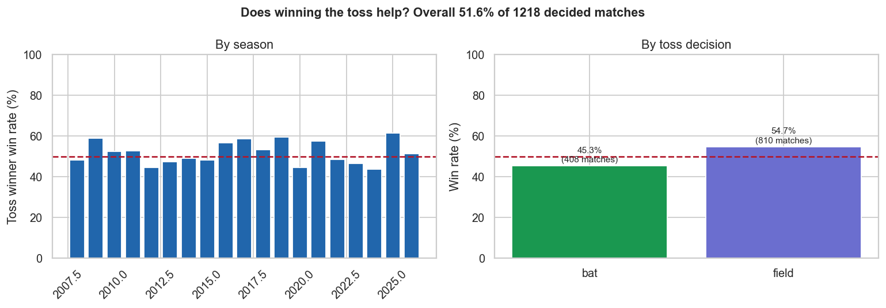
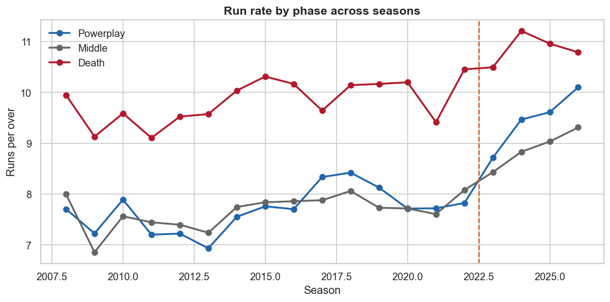
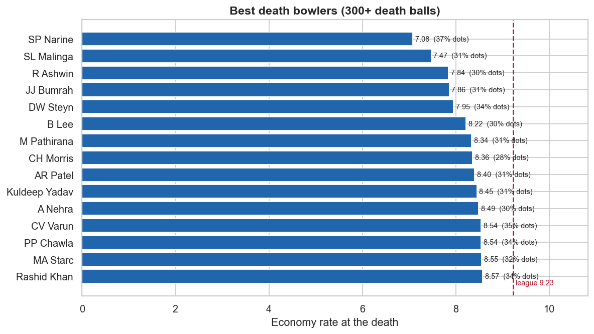
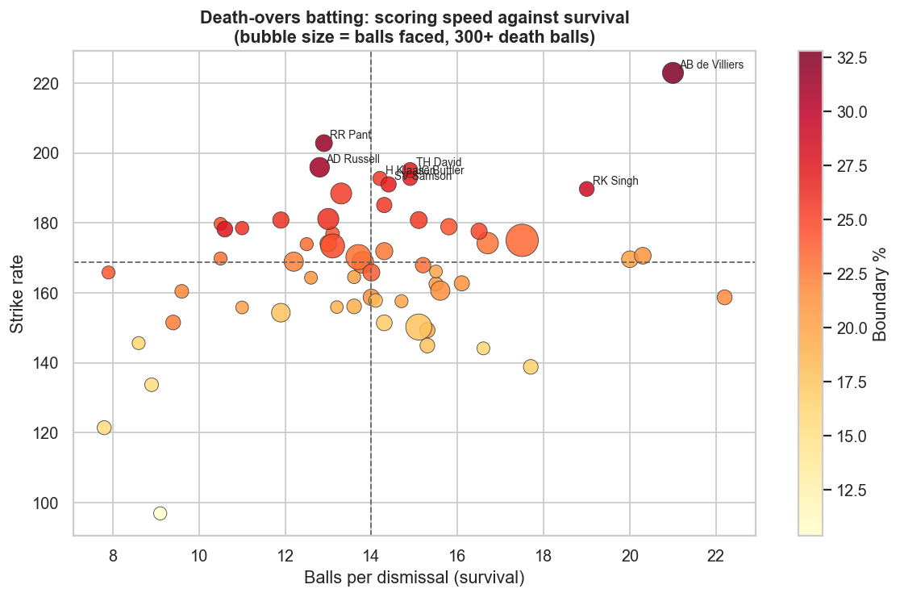

IPL Ball-by-Ball Analytics
295,557 deliveries from 1,243 matches (2008–2026), parsed out of nested Cricsheet JSON into a clean analysis table with correct cricket scoring conventions applied throughout. The headline results are about the Impact Player rule and the toss — but the method finding is that the intuitive way to locate a batter's weakness measures something else entirely.
The brief
Nineteen seasons of ball-by-ball data, and three questions worth asking of it
Cricsheet publishes every IPL delivery as nested JSON — one file per match, with deliveries buried inside innings inside overs, and extras, wickets and replacements attached as optional sub-objects. Step one was flattening that into a single analysis table without losing the structure that makes cricket statistics correct.
Three questions followed: has scoring genuinely risen and does the 2023 Impact Player rule show up in it, is winning the toss worth anything, and can a batter's weakest phase be located from outcome data alone.
Scoring conventions
These decide every rate in the project, so they are stated rather than assumed
| Measure | Rule applied |
|---|---|
| Balls faced (batter) | Excludes wides, includes no-balls |
| Balls bowled (bowler) | Excludes wides and no-balls |
| Runs conceded (bowler) | Excludes byes and leg-byes |
| Wickets (bowler) | Excludes run-outs and retirements |
| Super overs | Excluded from all per-over statistics |
The distinction matters most at the death, where wides are frequent. A bowler charged with leg-byes they did not concede, or credited with a run-out they did not take, gets an economy rate and a strike rate that no cricket analyst would recognise. Of the 295,557 total deliveries, 284,465 are legal deliveries — the denominator for bowling rates.
The dashboard

Findings
1 Scoring has risen, and the Impact Player rule is visible in it

| Season | Matches | Run rate | Boundary % | Dot % | Sixes/match |
|---|---|---|---|---|---|
| 2018 | 60 | 8.65 | 18.3 | 34.4 | 14.5 |
| 2019 | 60 | 8.41 | 17.6 | 35.6 | 13.1 |
| 2020 | 60 | 8.29 | 16.5 | 34.8 | 12.2 |
| 2021 | 60 | 8.05 | 16.1 | 36.2 | 11.4 |
| 2022 | 74 | 8.54 | 18.0 | 37.1 | 14.4 |
| 2023 | 74 | 8.99 | 19.3 | 33.9 | 15.2 |
| 2024 | 71 | 9.56 | 21.1 | 32.9 | 17.8 |
| 2025 | 74 | 9.63 | 21.6 | 32.3 | 17.6 |
| 2026 | 74 | 9.88 | 22.6 | 32.7 | 19.3 |
Run rate averaged 8.39 across the five seasons before the rule and 9.52 from 2023 onwards — a rise of +1.13 runs per over. Dot balls fell from roughly 37% to 33%, and sixes per match rose from about 14 to 19.
The rule lets a side substitute a player mid-match, which in practice means batting sides field an extra specialist batter and can bat deeper without carrying the risk that used to come with it. The timing fits.
A rule change is not the only thing that happened in 2023. Squad composition, pitch preparation and bat technology all move too, and none of them are in this dataset. This is an association in a time series, not a controlled experiment — the rule is a plausible explanation for a real jump, not a demonstrated cause of it.
2 The toss is a coin flip. The decision after it is not
Across 1,218 decided matches, the toss winner won 628 times — 51.6%. A binomial test against a fair coin gives p = 0.289. Winning the toss confers no advantage distinguishable from chance.
That headline conceals the actual effect entirely:

| Toss decision | Matches | Win rate |
|---|---|---|
| Chose to field | 810 | 54.7% |
| Chose to bat | 408 | 45.3% |
Captains who chose to field won 54.7% against 45.3% for those who chose to bat — consistent with the standard explanation that evening dew makes the ball harder to grip in the second innings, so chasing is easier. Captains appear to know this: they chose to field in 67% of matches.
Captains do not choose at random. They field when conditions favour chasing and bat when they do not, so part of the 9.4-point gap is the conditions that prompted the decision rather than the decision itself. What the data supports is that the toss is not the interesting variable — the innings order is — and the headline 51.6% hides that completely.
3 The three phases are different games

| Phase | Balls | Run rate | Boundary % | Dot % | Balls per wicket |
|---|---|---|---|---|---|
| Powerplay | 89,153 | 8.09 | 20.4 | 46.3 | 24.9 |
| Middle | 131,526 | 7.95 | 14.3 | 31.8 | 23.0 |
| Death | 63,786 | 10.06 | 20.8 | 28.4 | 11.8 |
The death overs score 1.3× as fast as the middle overs and cost a wicket every 11.8 balls against 23.0 — roughly twice as often.
This is why any comparison of players has to be made within a phase. A batter with a strike rate of 140 is unremarkable at the death and outstanding in the powerplay, and a single career strike rate hides which of those a player actually is.
4 Death bowling, measured properly

| Bowler | Balls | Economy | Dot % | Boundary % |
|---|---|---|---|---|
| SP Narine | 1,105 | 7.08 | 37.4 | 12.8 |
| SL Malinga | 1,117 | 7.47 | 31.3 | 13.7 |
| R Ashwin | 601 | 7.84 | 29.6 | 12.6 |
| JJ Bumrah | 1,423 | 7.86 | 31.2 | 15.1 |
| DW Steyn | 634 | 7.95 | 34.4 | 16.9 |
| M Pathirana | 402 | 8.34 | 31.3 | 17.4 |
| Rashid Khan | 630 | 8.57 | 34.3 | 17.9 |
Against a phase average of 10.06 runs per over, Narine's 7.08 across 1,105 deaths balls is nearly three runs an over better than the field. Both scoring corrections matter here more than anywhere else in the innings, because the death is where wides are most frequent.
The method finding
Why comparing a batter to themselves finds nothing
The question "where is this batter weakest?" has an obvious approach: compute their strike rate in each phase and take the lowest. Every batter's powerplay strike rate is lower than their death strike rate, so the answer comes back "powerplay" for essentially everyone.
That is not a finding about batters. It is finding 3 again — everyone scores faster at the death, so a within-player comparison across phases is just measuring the phase effect, which is already known and identical for all players.
Compare each batter against the league average for that same phase, not against their own other phases. The question becomes "how does this batter do relative to what other batters manage in the same situation" — which is the question that was actually being asked.
Applied to every batter with 200+ balls in all three phases, the phase where their strike rate sits furthest below the league rate for that phase:

| Batter | Weakest phase | Balls | Their SR | League SR | Gap | Dot % |
|---|---|---|---|---|---|---|
| S Badrinath | Powerplay | 237 | 76.8 | 129.0 | −52.2 | 61.2 |
| MK Tiwary | Powerplay | 230 | 97.4 | 129.0 | −31.6 | 51.3 |
| JP Duminy | Powerplay | 239 | 98.3 | 129.0 | −30.7 | 54.0 |
| KD Karthik | Powerplay | 402 | 98.5 | 129.0 | −30.5 | 52.2 |
| JH Kallis | Middle | 1,012 | 98.5 | 128.5 | −30.0 | 31.6 |
| KS Williamson | Powerplay | 477 | 100.4 | 129.0 | −28.6 | 50.3 |
| NV Ojha | Death | 294 | 139.8 | 168.3 | −28.5 | 36.4 |
| SR Watson | Powerplay | 1,257 | 112.6 | 129.0 | −16.4 | 51.9 |
| Shubman Gill | Death | 304 | 155.9 | 168.3 | −12.4 | 23.0 |
The dot_pct column shows most of the mechanism. Across all qualifying batter-phases, dot percentage correlates at −0.44 with falling behind the league, against −0.33 for survival (balls per dismissal). Strike rotation is the larger effect, but both are present — batters who fall behind tend to be playing more dot balls and getting out somewhat more often.
The SQL layer
8 queries over a SQLite build of the ball-by-ball table
The scoring conventions are enforced in the schema comment and then applied consistently in every query, so a reader can see which rule produced which denominator:
-- Tables: deliveries(match_id, season_year, venue, innings, batting_team,
-- bowling_team, over, ball_in_over, phase, batter, bowler,
-- runs_batter, runs_total, wides, noballs, byes, legbyes,
-- is_legal_delivery, is_four, is_six, is_dot, is_wicket, ...)
--
-- Scoring conventions, applied consistently below:
-- balls faced = wides excluded, no-balls included
-- balls bowled = wides and no-balls both excluded
-- runs conceded = byes and leg-byes excludedThe league-relative comparison from the method finding is one query. A window function supplies the league rate for each phase alongside each batter's own rate, so the comparison happens in a single pass rather than needing a self-join against a separately computed average:
-- Q3. Batter strike rate by phase, against the league average for that phase -- A window function supplies the league rate alongside each batter's own, -- so the comparison happens in one pass. WITH batter_phase AS ( SELECT batter, phase, COUNT(*) AS balls_faced, SUM(runs_batter) AS runs, SUM(is_wicket) AS dismissals, ROUND(100.0 * SUM(runs_batter) / COUNT(*), 1) AS strike_rate FROM deliveries WHERE is_super_over = 0 AND wides = 0 -- a wide is not a ball faced GROUP BY batter, phase HAVING COUNT(*) >= 200 ), with_league AS ( SELECT bp.*, ROUND( AVG(bp.strike_rate) OVER (PARTITION BY bp.phase), 1 ) AS league_avg_sr FROM batter_phase bp ) SELECT batter, phase, balls_faced, strike_rate, league_avg_sr, ROUND(strike_rate - league_avg_sr, 1) AS sr_vs_league FROM with_league ORDER BY sr_vs_league;
Two details carry the correctness. wides = 0 implements "a wide is not a ball faced" at the row level rather than correcting afterwards, and PARTITION BY phase is what makes the benchmark phase-specific — without it every batter would be compared against one blended league rate and the whole method finding would collapse back into measuring the phase effect.
Takeaways
What this analysis supports
- Evaluate batters within a phase, against the league. A career strike rate conflates a player's role with their ability. The league-relative, phase-specific comparison is the only one that isolates the player.
- Coach strike rotation before power. Dot percentage is the stronger correlate of falling behind the league (−0.44) than getting out is (−0.33). The batters at the top of that table are not being dismissed too often; they are failing to score.
- Field first, but not because of the toss. The 9.4-point gap belongs to innings order, not to winning the coin flip — and part of it is the conditions that drove the choice.
- State scoring conventions before quoting any rate. Economy, strike rate and averages all depend on decisions about wides, no-balls, byes and run-outs. Two analysts using different conventions produce different numbers from identical data.
Limitations
- No ball-tracking data. Cricsheet records outcomes, not line, length, pace or shot type. Statements about why a batter struggles in a phase are not supportable here — only that they do.
- Bowling style is not in the data. A spin-versus-pace weakness analysis would need a separate player-attributes source joined on name, which introduces its own matching errors.
- Minimum-ball thresholds are judgement calls. 200 balls per phase, and 300 for the death charts, trade sample size against coverage. Different thresholds change who appears in the tables.
- Nineteen seasons of rule and format changes. Team counts, squad rules and playing conditions all vary across the period, so every cross-era comparison carries that caveat — including the Impact Player result.